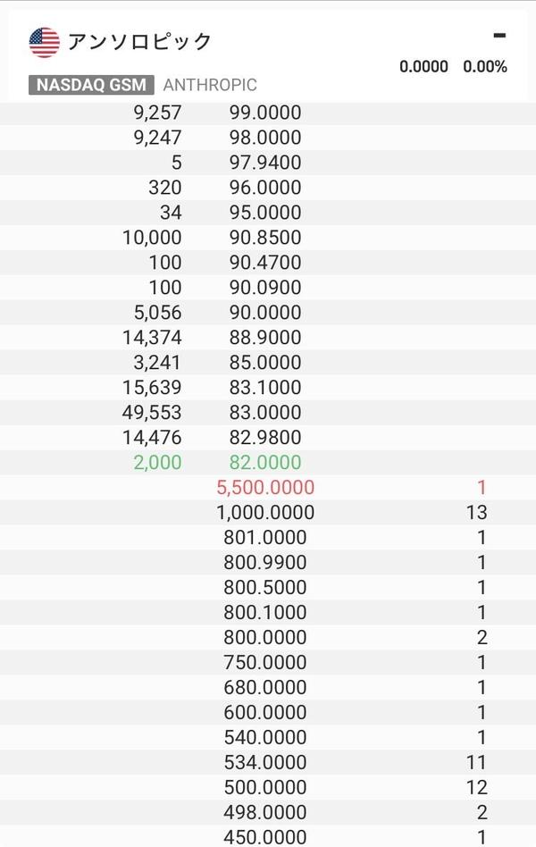
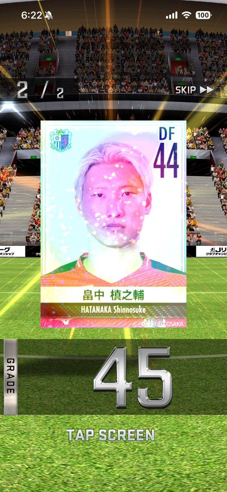

🇯🇵 日本の主要ニュース
楽天証券の情報漏えい、金融庁が報告徴求命令447万口座で年収や金融資産などの情報が漏えいした可能性がある問題で、金融庁は19日、楽天証券に事実関係の確認や原因分析などを求める報告徴求命令を出しました。
出典：NHK
🌍 世界の主要ニュース
🤖 AIニュース
💻 PC・ガジェットニュース
🔥 Xのトレンド（日本）
ジャンルで絞らず上位20件を掲載。「未確認」はX上の投稿だけを根拠にしたもので、報道機関による裏付けはありません。
11月20日は「ピザの日」。ピッツァ・マルゲリータの名前の由来となったイタリア王妃マルゲリータの誕生日にちなむ記念日で、ピザの写真やイラストの投稿が並んでいます。
⚠ 未確認（X情報のみ）
日本テレビの朝の情報番組「ZIP!」の実況タグ。Snow Manの阿部亮平さんがクレーンゲームに挑み、カントリーマアムを取った企画にファンが沸いています。
⚠ 未確認（X情報のみ）
「ピザの日」に合わせ、王妃マルゲリータとトマト・モッツァレラ・バジルの3色（イタリア国旗の色）のピザの由来を紹介する投稿が広がっています。
⚠ 未確認（X情報のみ）
金曜朝恒例の「きんきんきんようび」のコピペや朝のあいさつ。クリスピー・クリーム・ドーナツ公式の「最後のダズンデー」告知もありました。
⚠ 未確認（X情報のみ）
なにわ男子の公式SNSが11月20日にちなんで「ニャオーン」と投稿したとみられ、予想外の言葉にファンが「ニャオーン⁉」と驚く投稿が相次いでいます。
⚠ 未確認（X情報のみ）
なにわ男子の公式YouTubeで、同期の西畑大吾さんと正門良規さん（Aぇ! group）の「同期サシ呑み」動画が公開され、ファンが楽しみにする投稿が並びました。
⚠ 未確認（X情報のみ）
めざましテレビのなにわ男子のコーナー。この日は藤原丈一郎さんがイルミネーションを背景にロケを担当し、「確率20％を引き当てた」と話題に。
⚠ 未確認（X情報のみ）

ClaudeのAnthropicが米Nasdaqに上場（ティッカーANT）。調達額は史上最大で、初値は公開価格を34％上回りました。日本でも楽天証券などでIPO株を得た人の売買報告が相次いでいます。
出典：ITmedia NEWS・NHK
Netflixドラマ『地面師たち』の新シリーズ制作が発表されました。綾野剛さんと豊川悦司さんが続投し、ファーストルックも公開されています。
出典：ORICON NEWS・シネマトゥデイ
11月20日は「毛布の日」。冷え込みが強まる中、毛布やあたたかい過ごし方の投稿が広がりました。
⚠ 未確認（X情報のみ）
11月20日は国連の「世界こどもの日」。1989年に子どもの権利条約が採択された日で、記念日のイラストや投稿が並んでいます。
⚠ 未確認（X情報のみ）
米中ロの3首脳が史上初の3者会談後に「平和宣言」を発表。ウクライナや中東の情勢と並べて「この3か国が平和宣言？」と冷ややかに受け止める投稿が目立ちます。
出典：ロイター・AFPBB
サッカーゲーム「Jクラ」の新企画で、各クラブ2人ずつ、サポーターが選んだ計80選手が登場。推し選手が選ばれたかを確かめる投稿が広がっています。
⚠ 未確認（X情報のみ）
「Jクラ」のフレンドリーマッチ募集で自動入力される定型文「上のURLをタップすると『Jクラ』が起動します」が大量に投稿され、トレンド入りしたものです。
⚠ 未確認（X情報のみ）
同じく「Jクラ」で対戦相手を探す投稿の定型文。「マッチングコード[XXX-XXX]」の形で、コードを共有する投稿が相次いでいます。
⚠ 未確認（X情報のみ）
「Jクラ」の「フレンドリーマッチをやろう!」という対戦募集の定型文で、上の2つと同じ投稿群です。
⚠ 未確認（X情報のみ）
TOKYO FMの朝のラジオ番組「ONE MORNING」の実況タグ。リスナーが番組の企画やパーソナリティーのやり取りに反応しています。
⚠ 未確認（X情報のみ）

サッカーゲーム「Jクラ」のタグ。新選手の獲得報告や、BOX整理、対戦相手の募集などの投稿が集まっています。
⚠ 未確認（X情報のみ）
歌い手グループ「いれいす」のifさんの朝のあいさつ「おはいふござす」に、ファンが一斉に返信しています。
⚠ 未確認（X情報のみ）
GUと「ちいかわ」の冬コラボ第1弾が20日に発売。オンラインは朝7時15分から販売が始まり、購入報告や「キッズサイズがもう売り切れ」といった投稿が出ています。
⚠ 未確認（X情報のみ）
Grok Bot がまとめました。